To Santa Catarina Island: From Guarulhos a good hour south. Most of Florianópolis lies on Santa Catarina Island – more than 40 beaches, lagoons and hills covered in Atlantic rainforest. Our house is in João Paulo on the northern bay; to celebrate, steaks off the grill.
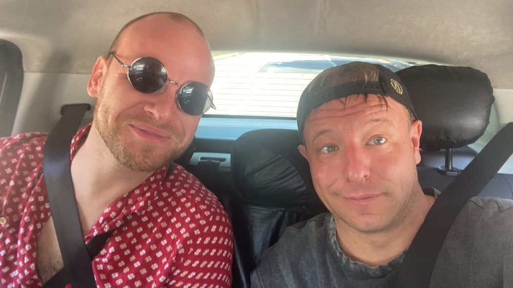
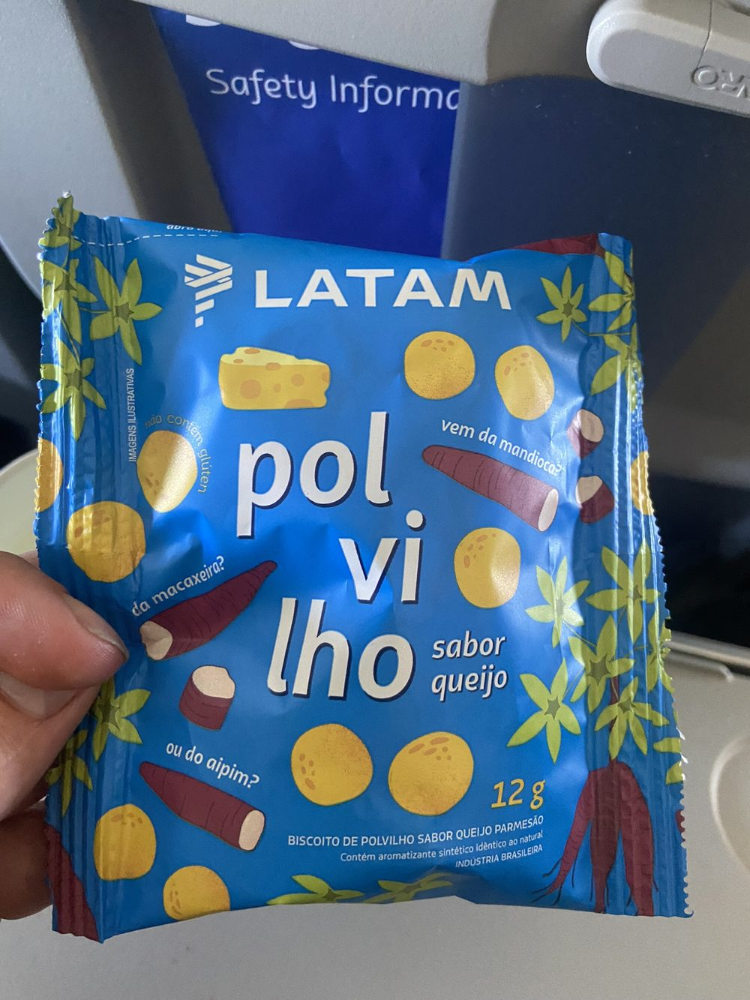
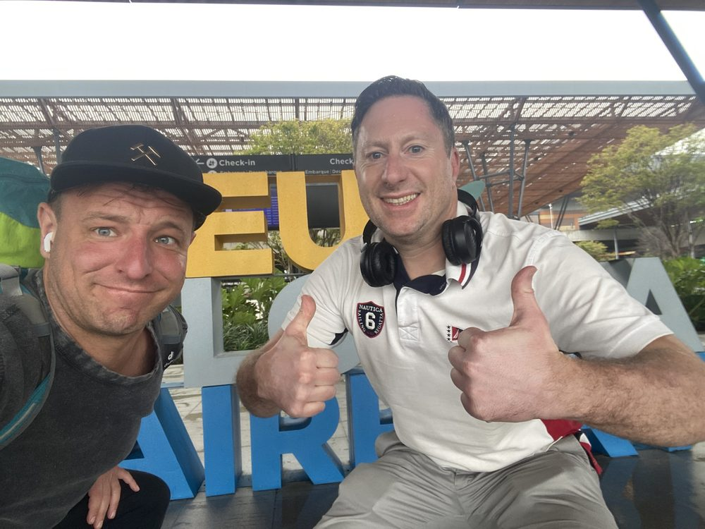
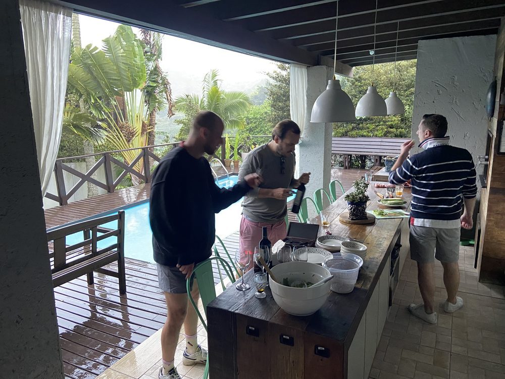
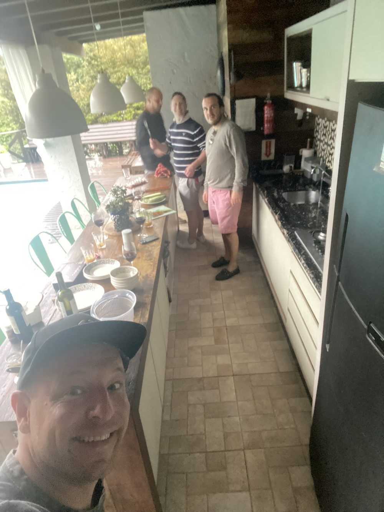
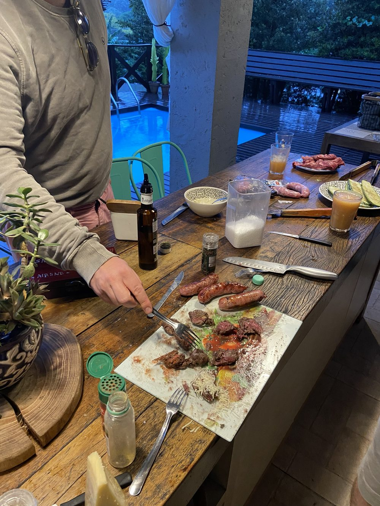
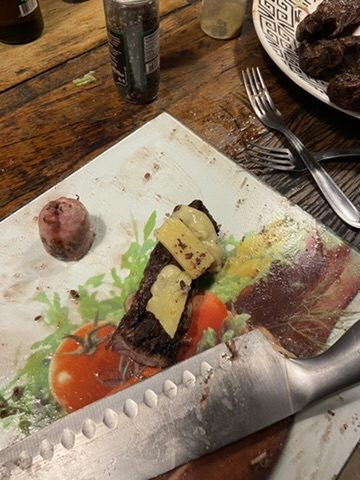
Centro at night: On the second evening into the city centre. On Praça XV de Novembro stands the Figueira, a fig tree more than a hundred years old whose branches are held up by props – already lit up for Christmas in November.
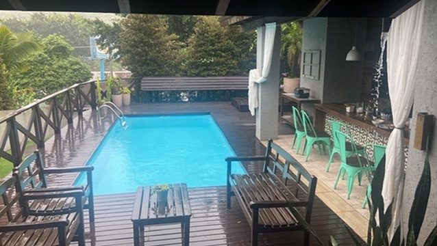
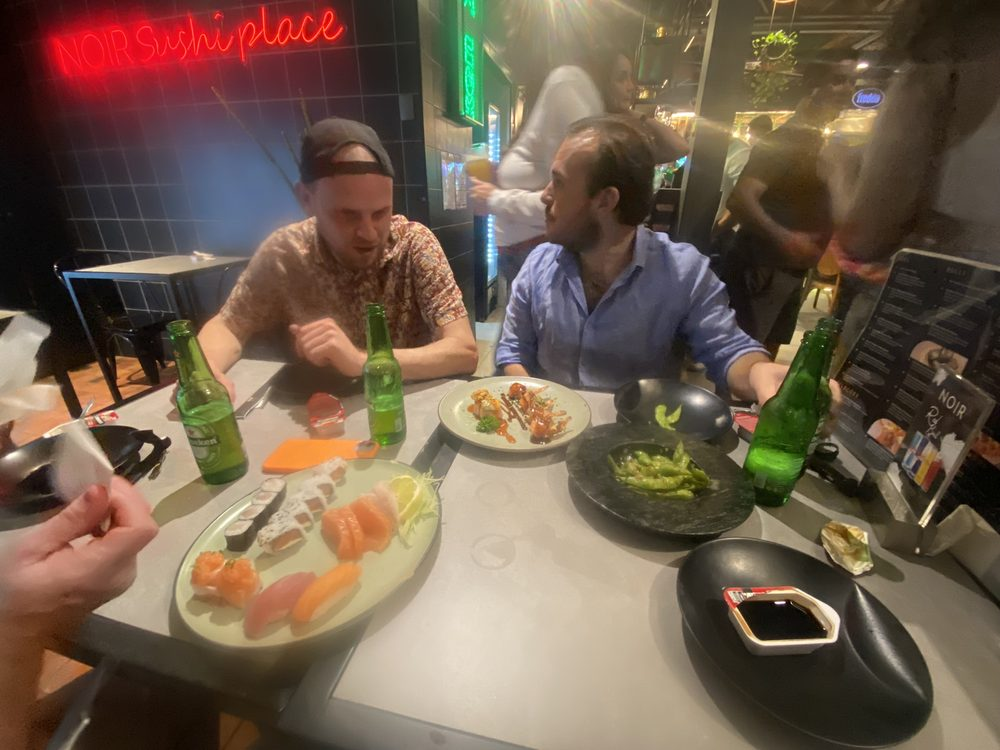
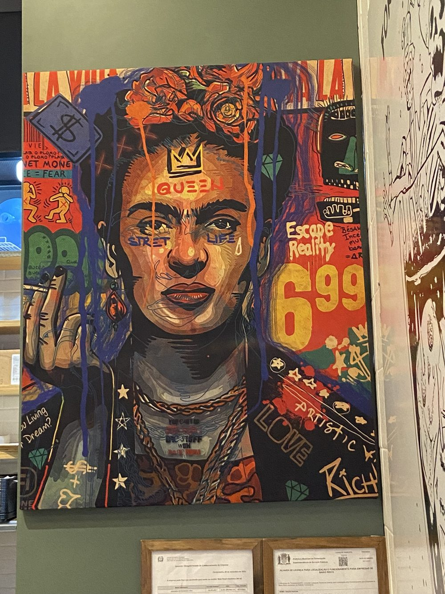
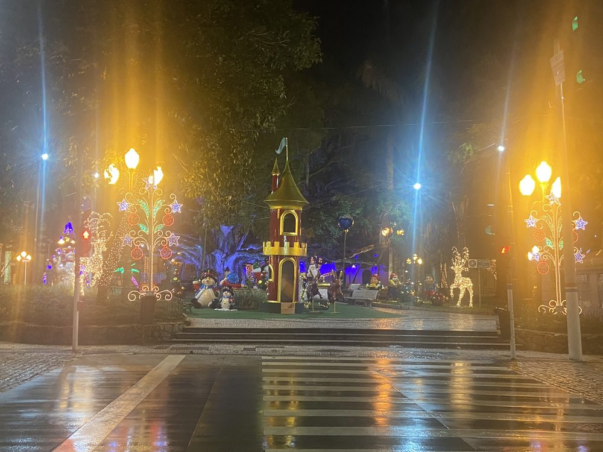
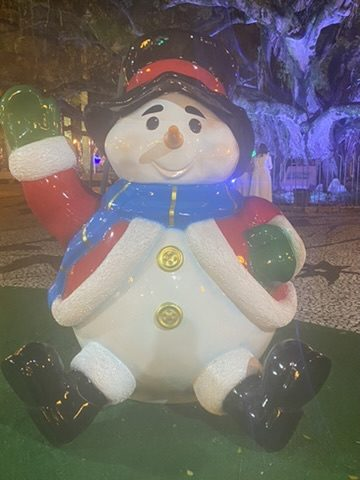
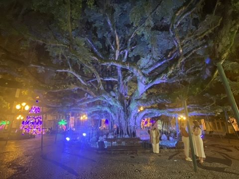
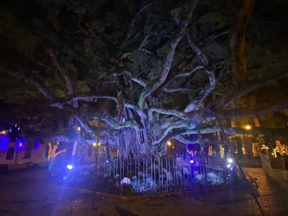